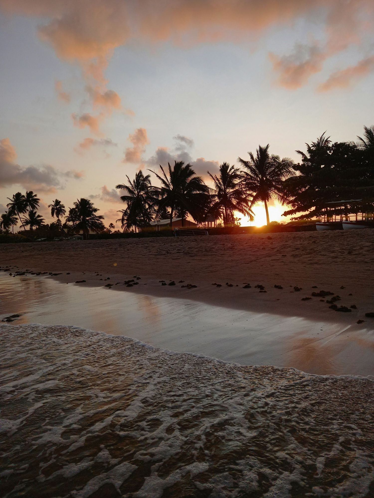
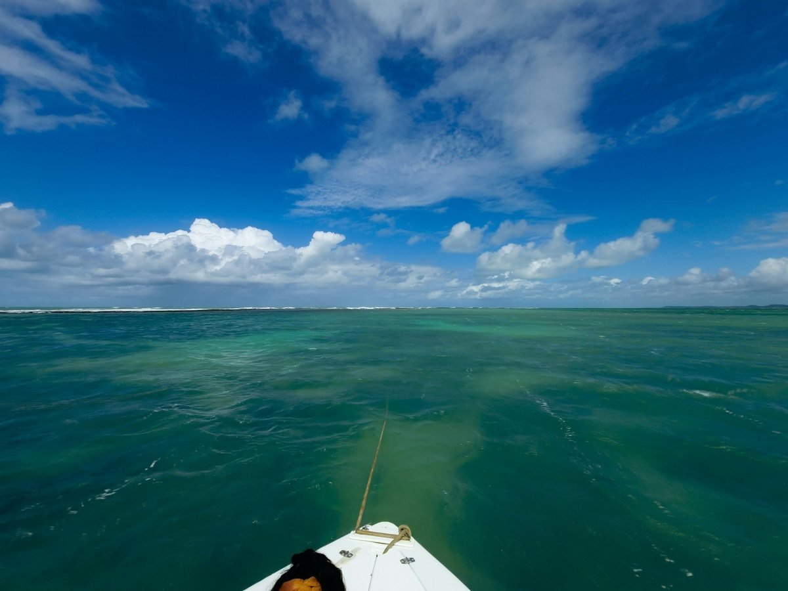
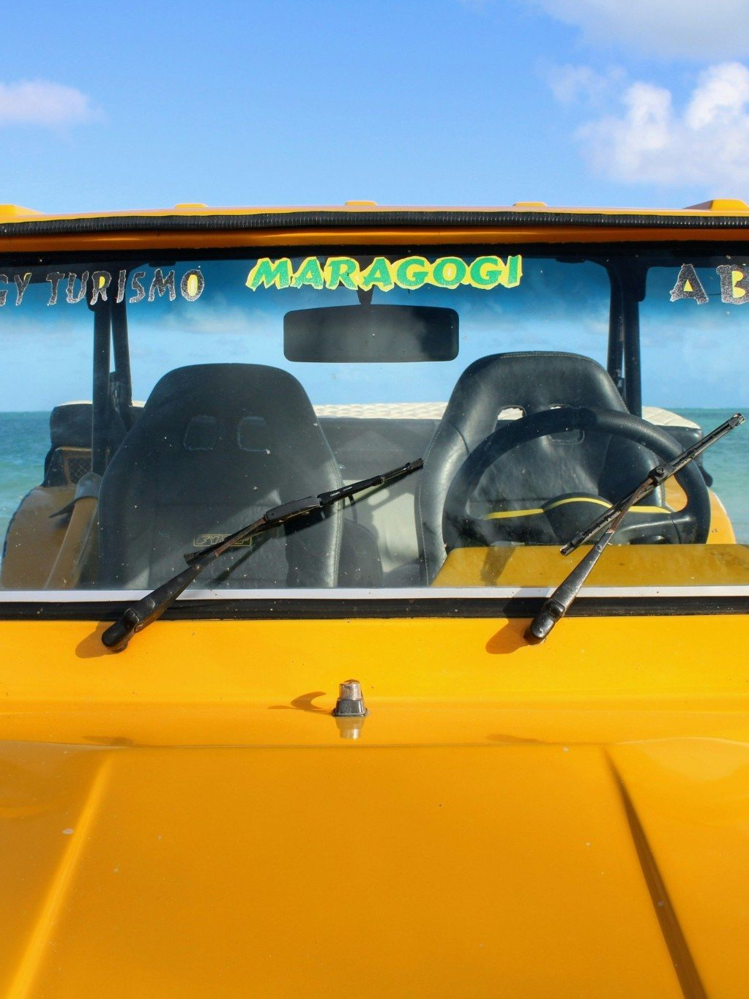

Para onde você sonha ir?
Maragogi
Alagoas, Brasil
Piscinas naturais
Maragogi
Alagoas · Brasil
Novembro 2026
16 – 20 nov · 4 noites
12
viajante
viajantes
Tudo pronto para você
Cuidamos de cada detalhe
SUA PRÓXIMA AVENTURA
Maragogi te espera
Falar no WhatsApp
Olá! Quero viver Maragogi
D
Dunamis Travel
online agora
Vamos planejar juntos!
Atendimento consultivo e exclusivo
DUNAMIS TRAVEL